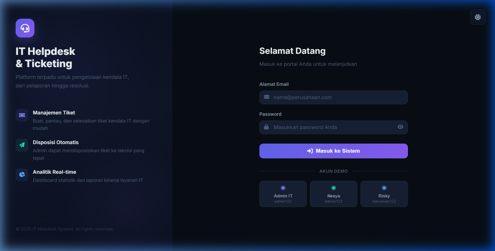
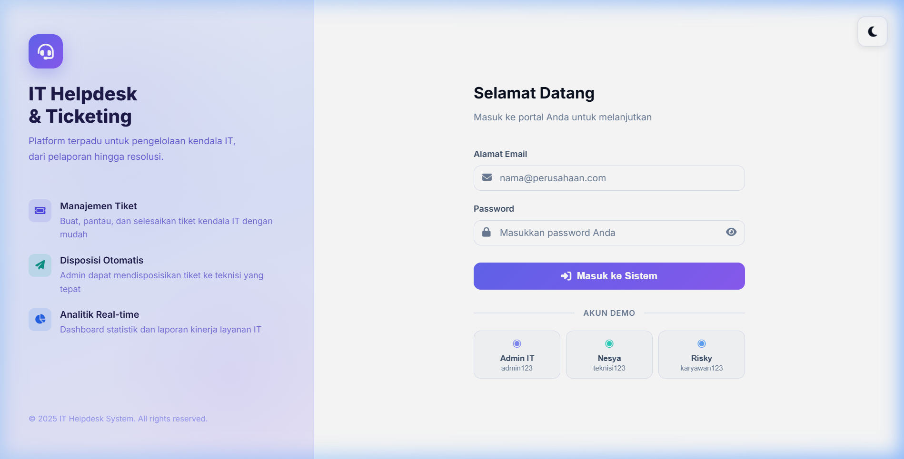
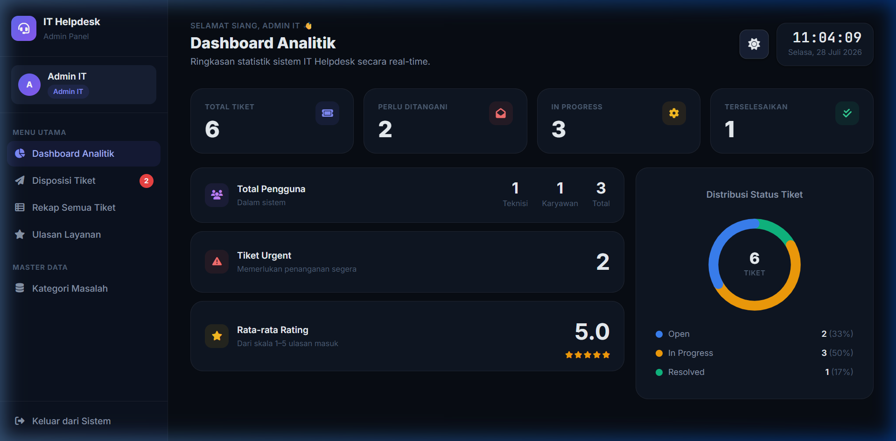
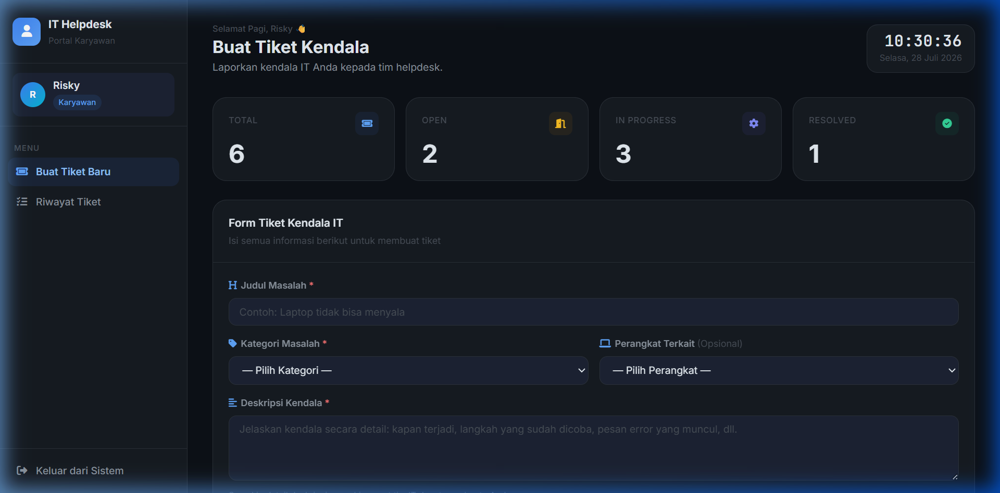
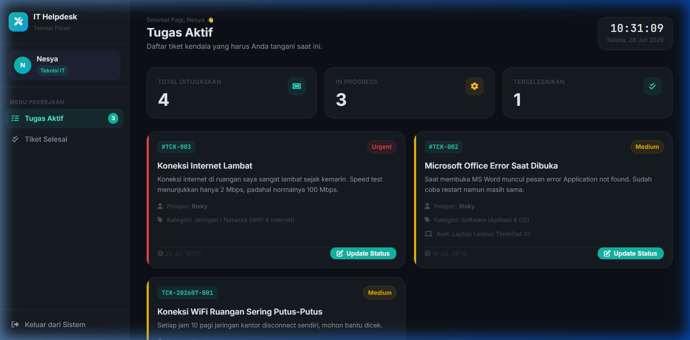

Sistem IT Helpdesk & Ticketing ini adalah sebuah aplikasi berbasis web yang dirancang khusus untuk memfasilitasi pelaporan, pemantauan, dan penyelesaian kendala IT di dalam suatu perusahaan atau institusi.
Aplikasi ini dibangun menggunakan arsitektur Native PHP yang tangguh berpadu dengan MySQL sebagai basis data. Di sisi antarmuka, aplikasi ini menggunakan Tailwind CSS untuk tata letak modern dan CSS Custom Variables untuk mewujudkan fitur Dark Mode & Light Mode yang dinamis, interaktif, bersih, rapi, dan berkualitas premium (SaaS Level).
localStorage.Halaman ini adalah pintu masuk sistem. Dilengkapi dengan toggle mode gelap/terang, desain menggunakan glassmorphism, gradient mulus, dan kartu interaktif dengan micro-animasi yang premium.
Login Mode Gelap (Dark Mode):

Login Mode Terang (Light Mode):

Panel ini diperuntukkan untuk Koordinator IT/Admin untuk mengelola tiket, melakukan pendisposisian tiket kepada teknisi, mengatur data master, dan menganalisa efisiensi layanan. (Mode Gelap).

Karyawan dapat melaporkan keluhan IT serta melacak progres penanganan dari tiket yang sudah pernah mereka buat sebelumnya. Warna aksen disesuaikan dengan biru elegan.

Panel ini merupakan meja kerja teknisi, di mana setiap penugasan masuk akan diproses dengan pendekatan mirip metode Kanban, yang memberikan batas visualisasi timeline penanganan dan rincian kontak pelapor.

Pengembangan “IT Helpdesk & Ticketing System” ini menunjukkan perpaduan logika backend (Native PHP) yang solid dengan presentasi antarmuka frontend (Premium CSS + Tailwind) masa kini yang sangat mengedepankan fungsionalitas sekaligus kenyamanan visual (UI/UX) bagi penggunanya.